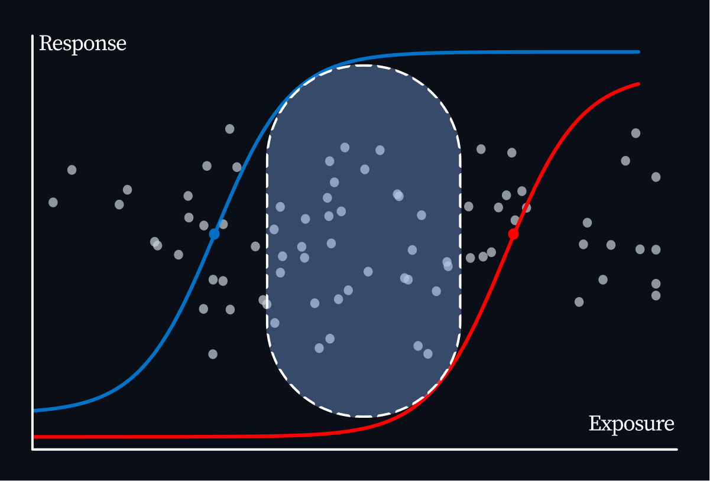
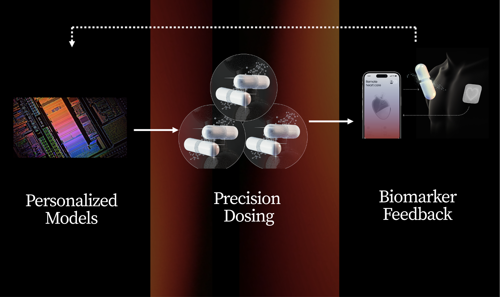
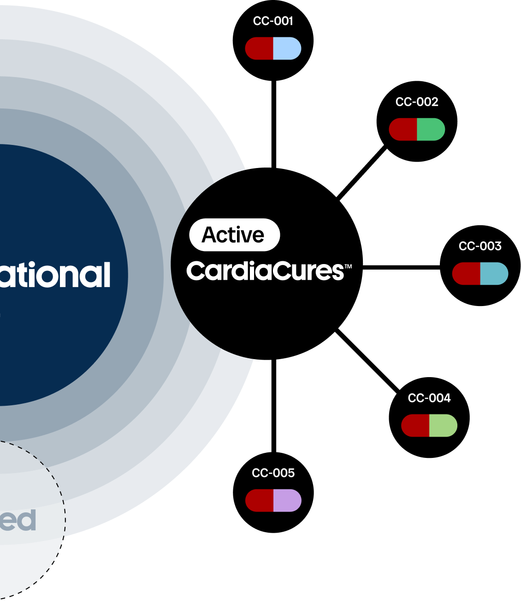

Your Heart. Your Data. Your Cure.
Reinventing Personalized Medicine for Heart Disease
Learn More
Reinventing Personalized Medicine for Heart Disease
Learn MoreUnmet Medical Need
Effective antiarrhythmic drugs for AF exist, but narrow therapeutic window
Patients must be admitted to the hospital for 3 days when starting certain drugs
Many patients and doctors avoid these drugs due to hospitalization burden

The winning product isn't always the strongest molecule. It is the one that reliably reaches the window.
Founder & CEO
David Strauss, MD/PhD
14+ years at the FDA
9Y FDA
Center for Drugs
5Y FDA Center for Devices
1Y FDA Acting
Chief Scientist
One Size Fits All Dosing
Variability among patients in
benefit-risk
Larger trials required to demonstrate efficacy
Scale to All Classes of AF Drugs for Holistic Patient Management at Home

Model Informed Precision Dosing
Smaller, faster clinical trials to demonstrate
efficacy and fewer
safety failures

A new category of medicine.
Dosing software named in the FDA-approved label - developed, submitted, and reimbursed as a drug. Built with the people who helped write the regulatory science.
Explore the platform